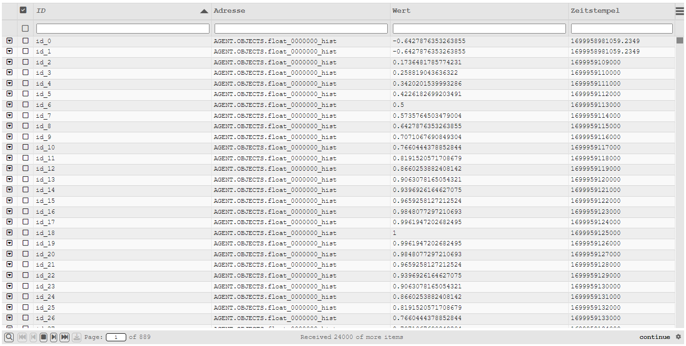

HTML table
The new HTML table based on the "Slick Grid" library replaces the existing Quick Dynamic "Table". The old Quick Dynamic is still available, but as there is no further development of the Quick Dynamic, it is recommended to use the new HTML table instead.

Requirements
The table library requires jQuery > 1.7.x which is currently shipped with atvise. To avoid compatibility problems, the supplied jQuery version is only used if no existing version is detected. If you already use jQuery in your project, the HTML table will revert to the existing version. Therefore, make sure that in this case a jQuery version > 1.7.x is used and integrated globally!
Core functions
Change the width, order, and visibility of columns during runtime
Formatting the column contents
Multiple marking of data lines
Sorting and filtering in the loaded data state
Additional information space through foldable child elements
Scrolling and paging
Automatic reloading of data (continuation/triggered)
Export the data as CSV
Components
The HTML table comes with four displays.
Display "table"
The display includes the compilation of all table components (panel, footer and notification) and can be dragged into any display.
Functions of the display
This display can be used independently. It provides the functions of the integrated components. Configuration of the integrated components is done via the configuration parameters of the display.
Using the display
Insert the display into a target display
To use the table display, drag it to any display (target display). Click on the table in the target display and assign a unique table name to the parameter "Table ID". All other parameters are already preconfigured for easy use of the HTML table. Their detailed description can be found in the display help.
Scripting in the target display
To generate the table, the table resources must be loaded into the target display and the configuration must be created. Then the configuration of the table has to be registered and completed.
Example for loading resources and registering a configuration:
webMI.table.loadResources(function() {
var config = [];
config[PARAMETER] = VALUE;
webMI.table.register("Table ID", "config", config);
webMI.table.setReady("Table ID", "config");
});
More details about scripting and the configuration parameters in the code can be found in the section Coding and reference.
Display "table_panel"
The display contains the basic table offering sorting, filtering and scrolling but no status bar. It is suitable for use on small areas that have no special requirements for additional information and/or page functions (pagination).
Functions of the display
This display can be used independently. The display adopts the generation of the HTML table and thus provides the functions described below.
- Width, order and visibility of columns
The width and order of columns can be changed at runtime using the mouse in the header.
For this purpose, the corresponding column is moved by drag & drop, or dragged to the desired size at the column edges (left / right). Changing the visibility of a column is done in the table menu. There is a corresponding selection available.
The configuration of whether a column can be changed during runtime is shown in the display code.
Hint
Correct column width change is not available in all browsers.
- Highlight data lines
Data lines can be marked using the selection field or with the help of the Ctrl and Shift keys.
- Highlight with selection box
To select or deselect a data row, click on the selection box. The selected line is then marked (or the marking removed) and the selection confirmed with a tick mark in the selection box.
- Highlight with Ctrl key
Hold down the Ctrl key and click (while holding down the Ctrl key) the data lines to be selected one after the other. When using the Ctrl key, you do not need to click on the selection box. It is sufficient if the mouse pointer is anywhere on the data line.
To "deselect" a marked data line, please click on the data line again (while holding down the Ctrl key).
- Highlight an area with Shift key
As soon as a line has been marked, you can select an area while holding down the Shift key. To do this, hold down the Shift key and click on the last data line of the area you want to mark. You can also deselect an area by clicking on an already highlighted data row while having the Shift key held.
- Filtering of values
Values are filtered by default without using regular expressions. The wildcard
*can be used. To search for*in the data you have to use\*. Filtering after entering a value is performed automatically. The behavior of the filtering and the delay between keystrokes can be changed in the display parameters.Matches are shown in brackets in the tables below.
Filtering with default setting without wildcard Value
Search
Found
[15]32680001687.8816
15
Yes
1532680001687.8816
154
No
153[26]80001687.8816
26
Yes
153268000168[7.8]816
7.8
Yes
Filtering with default setting with wildcard Value
Search
Found
[15]32680001687.8816
15
Yes
1532680001687.8816
154
No
[15]3[26]80001687.8816
15*26
Yes
[15][3]2680001687.8816
15*3
Yes
[15]32680001687.8816
15*4
No
[15]3268000[16]87.[881]6
15*16*881
Yes
[15]3268000168[7].8816
15*7*2
No
Filtering with regular expression Value
Search
Found
[15]32680001687.8816
15
Yes
1532680001687.8816
154
No
[15]3[26]80001687.8816
15.*26
Yes
[15]32680001687.[88]16
15.*88
Yes
[15]32680001687.[88]16
15.*8{2}
Yes
[15]32680001687.[88]16
15.*88.*7
No
Hint
Using regular expressions is not recommended for large volumes of data because of the higher performance requirements.
- Child-Elements
The table includes the possibility to provide space for additional details (child elements). If defined these can be shown or hidden by clicking the symbol in the first column.
- Scrolling without paging ("virtual scrolling")
The table works with "virtual scrolling" technique. Therefore, scrolling is always active when the displayable content exceeds the available space. Paging only becomes available by integrating the status bar.
- Export of data as CSV
Exporting data is possible via the menu (top left).
The following exports are available:
Export all displayed or only marked data
Export all (including hidden) or only marked data
Using the display
Insert the display into a target display
To use the panel display, drag it to any display (target display). Click on the table in the target display and assign a unique table name to the parameter "Table ID". All other parameters are already preconfigured for easy use of the panel. Their detailed description can be found in the display help.
Scripting in the target display
To generate the table, the table resources must be loaded into the target display and the configuration must be created. Then the configuration of the table has to be registered and completed.
Example for loading resources and registering a configuration:
webMI.table.loadResources(function() {
var config = [];
config[PARAMETER] = VALUE;
webMI.table.register("Table ID", "config", config);
webMI.table.setReady("Table ID", "config");
});
More details about scripting and the configuration parameters in the code can be found in the section Coding and reference.
Display "table_notification"
The display is a functional button. This button will be displayed in case of availability of additional information. The button appears in the top right corner of the table.
Functions of the display
The display is already integrated in the display panel.
- Display of additional information (opening the information dialog)
The button will be displayed as soon as additional information becomes available. Click on Notification to open a dialog that displays the additional information.
- Deleting the information in the information dialog
Click on Clear to reset the displayed information.
- Close the information dialog
Click on Close (or [X] on the top right) to close the information dialog. If no information is available after closing, the Notification button in the table disappears.
Using the display
The addition of messages (or information) takes place in the script code of the target display. Details about scripting and the configuration parameters in the code can be found in the section Coding and reference.
Runtime mode (loading data)
With the introduction of the "continuation points", the new table supports automatic reloading of data. To accomplish this, the query must be inserted in the display code accordingly. Simple examples can be found in the display help of the table.
The following runtime modes are available:
- once (compatibility mode)
The data query is executed only once. As soon as all results of the query have been processed, "DONE" appears as confirmation text when the status bar is integrated (bottom right).
- live (subscription)
The data query is executed only once. A 'once' subscription is initialized which then continues automatically. If the status bar is integrated, the user is informed about the current queries by the text "LIVE" (bottom right).
- continue (reload until end of data)
In continue mode, the table is instructed to continue the data query until the end of data is reached. This repetition occurs automatically without the intervention of the user. If the status bar is inserted, the user is informed by the "continue" message about the transmission of data. Upon completion of the data transfer, the displayed status jumps to "DONE" (bottom right).
- triggered (reload on interaction)
In triggered mode, the table is instructed not to continue the data query until a specific event occurs. These events are when paging or scrolling reaches the end of the already loaded data (reload before reaching the last loaded data pages).
If the status bar is inserted, the user is informed about the behavior of the table by the text "triggered". When the entire data transmission is finished, the displayed status jumps to "DONE" (bottom right).
- manually (reload when prompted)
This mode is available only when the footer is integrated. In manual mode, the table is instructed to continue the data query only if this is desired by the user. The request is made by clicking on the "load" symbol.
Security mechanisms
To prevent the browser from crashing due to an overflow of data, buffer and truncate was provided for the table. The associated parameters can be passed to the table configuration in the display code. Furthermore, the maximum amount of data per query is limited according to the server settings (see queryLimit in atserver.ini).
- buffer
The buffer limits the update interval of the table. Incoming data is collected before it is passed on to the table. The use of the buffer is recommended for fast updating live data, since otherwise it may happen that user interactions are ignored because of the already changed data.
- truncate
The truncate function restricts the data amount in the table. As soon as the available space is exceeded, no new data will be added. If this happens, the status bar displays the truncate icon.
In order to avoid chopping of data, it is recommended to narrow down data queries (for example over appropriate periods).
Coding and reference
This section deals with table scripting and assumes that there is a corresponding display (table or panel) in a target display. The configuration and query code must be implemented in the target display.
First steps
A configuration consists of a basic structure in which the configuration parameters are inserted. In the following the variable config is used.
Basic structure of the configuration
The basic structure consists of loading the table resources and registering the configuration.
For a minimal configuration, define the parameters columns, mode and dataRequestFunction. The columns parameter defines the number and behaviour of the table’s columns. The parameter mode defines the runtime behaviour of the table. The dataRequestFunction parameter determines the data query and inserts the data into the table.
webMI.table.loadResources(function() {
var config = [];
// *** BEGIN CONFIGURATION SECTION ***
config["columns"] = [/* column definition, see below */];
config["mode"] = "once";
config["dataRequestFunction"] = function myRequest() { /* ... */ };
// *** END CONFIGURATION SECTION ***
webMI.table.register("Table ID", "config", config);
webMI.table.setReady("Table ID", "config");
});
Description of the columns (config["columns"])
The description of a column is made with the help of an object containing the descriptive attributes. These are in the minimal variant id, name and field. The link between displayed column and data values is made via the field attribute. The attributes id and name serve as the internal ID value of the column, or as the displayed name in the header of the table.
config["columns"] = [
{id: "timestamp", name: "Timestamp", field: "timestamp"},
{id: "value", name: "Value", field: "value"},
];
Description of the runtime mode (config["mode"])
The parameter mode determines the runtime behavior of the table. A detailed description can be found in the section Runtime mode (loading data).
config["mode"] = "once";
Description of the data retrieval function (config["dataRequestFunction"])
The parameter dataRequestFunction is used to store the data retrieval function, which is called by the table depending on the runtime mode and inserts the data using the statement that.addData(data); in the table.
config["dataRequestFunction"] = function myDataRequestFunction() {
var data = [];
data.result = [
{timestamp: "1546300800000", value: "1"},
{timestamp: "1546300805000", value: "2"},
{timestamp: "1546300810000", value: "3"},
{timestamp: "1546300815000", value: "4"},
];
that.addData(data);
};
Example of a basic configuration:
webMI.table.loadResources(function() {
var config = [];
// *** BEGIN CONFIGURATION SECTION ***
config["columns"] = [
{id: "timestamp", name: "Timestamp", field: "timestamp"},
{id: "value", name: "Value", field: "value"},
];
config["mode"] = "once";
config["dataRequestFunction"] = function myRequest() {
var that = this;
var data = [];
data.result = [
{timestamp: "1546300800000", value: "1"},
{timestamp: "1546300805000", value: "2"},
{timestamp: "1546300810000", value: "3"},
{timestamp: "1546300815000", value: "4"},
];
that.addData(data);
};
// *** END CONFIGURATION SECTION ***
webMI.table.register("Table ID", "config", config);
webMI.table.setReady("Table ID", "config");
});
Parameters of the configuration
The following parameters are provided in the script code for the configuration:
Parameter bufferInterval (Number)
The bufferInterval parameter defines the amount of time in milliseconds, in which data queries are collected before being passed to the table (see also section Security mechanisms).
config["bufferInterval"] = 50;
Parameter columns (Array)
The columns parameter defines the number and behavior of the table columns.
config["columns"] = [
{column configuration 1},
{column configuration 2},
/* ... */
{column configuration n}
]
Parameter |
Type |
Description |
|---|---|---|
alignment |
alignment |
Alignment of the cell contents |
cssClass |
string |
Custom CSS class of the column |
field |
string |
ID of the data element |
filter |
boolean |
Activation of the filter for the column (default: true) |
filterCheck |
boolean |
Shows a checkbox that allows to switch the filter mode. If the checkbox is active, a specific filter can be entered. In this case, it is also possible to filter for empty fields, e.g. in order to find the user Anonymous. If inactive, all entries are displayed. |
formatter |
function |
Formatting function for cell contents (see SlickFormatter) |
headerCssClass |
string |
Custom CSS class of the head cell |
id |
string |
ID of the column |
maxWidth |
number |
Maximum column width in pixels |
minWidth |
number |
Minimum column width in pixels |
name |
string |
Displayed column header in the header |
onChange |
function |
Defines how to respond to inputs if column.type="input" |
resizable |
boolean |
Activation of column resize (default: true) |
sortable |
boolean |
Activation of the sorting of column values (default: true) |
sortByDefault |
boolean |
Column is sorted by default |
sortByDefaultAsc |
boolean |
Selects the default sorting order (true asc, false desc); only works if sortByDefault is enabled |
textoption |
string |
Style of cell content (text) |
type |
array |
Type of cell content |
type[0] |
string |
Conversion type |
type[1] |
string |
Optional parameter for the transformation type |
visible |
boolean |
Activation of the visibility of the column (default: true) |
width |
number |
Column width in pixels |
Value |
Position |
|---|---|
top-left |
Top left |
left |
Left |
bottom-left |
Bottom left |
top-center |
Top center |
center |
Center |
bottom-center |
Bottom center |
top-right |
Top right |
right |
Right |
bottom-right |
Bottom right |
Value |
Font |
|---|---|
normal |
Normal |
italic |
Italic |
small-caps |
Small-caps |
bold |
Bold |
bold-italic |
Bold italic |
bold-small-caps |
Bold small caps |
bolder |
Bolder |
bolder-italic |
Bolder italic |
bolder-small-caps |
Bolder small caps |
lighter |
Lighter |
lighter-italic |
Lighter italic |
lighter-small-caps |
Lighter small caps |
Example of a column configuration:
config["columns"] = [
{id: "id", name: "ID", field: "id", sortable: true, filter: true},
{id: "timestamp", name: "Timestamp", field: "timestamp", sortable: true, filter: true},
{id: "address", name: "Address", field: "address", sortable: true, filter: true},
];
Example for configuring input fields in columns:
Using the parameters column.type = "input" allows to define input fields for columns. The onChange function must be used to define the response to the input (e.g. saving the entered value on a node). The column must be formatted with the formatter parameter - supported HTML Input Types are "text" and "checkbox".
//Custom html formatter
function htmlFormatter(row, cell, value, columnDef, dataContext) {
var title = value;
return '<div class="slick-cell-item" title="' + title +
'<div class="box-input">' +
'<input type="text" class="atvise_input_element" style="width:100%" value="' + value + '"/>' +
'</div>' +
'</div>';
}
//Column configuration
config["columns"] = [
{id: "id", name: "ID", field: "id", sortable: true, filter: true},
{id: "address", name: "Adresse", field: "address", sortable: true, filter: true},
{id: "value", name: "Wert", field: "value", sortable: true, filter: true, formatter: htmlFormatter, type: "input", onChange: function (item, value) {
webMI.data.write("AGENT.OBJECTS.MyValue", value);
}},
];
Parameter continuationInterval (Number)
The continuationInterval parameter defines the period in milliseconds between two data queries in continue mode.
config["continuationInterval"] = 250;
Parameter dataRequestFunction (Function)
The parameter dataRequestFunction is used to store the data retrieval function. This funtion is called by the table depending on the runtime mode and inserts the data using the statement that.addData (data); to the table. When using continuation points, the information about the current continuation point is passed to the function.
config["dataRequestFunction"] = function myDataRequestFunction(continuation) {
var data = [];
data.result = [
{timestamp: "1546300800000", value: "1"},
{timestamp: "1546300805000", value: "2"},
{timestamp: "1546300810000", value: "3"},
{timestamp: "1546300815000", value: "4"},
];
that.addData(data);
};
Parameter dataReleaseFunction (Function)
The dataReleaseFunction parameter clears the resources reserved by dataRequestFunction:
config ["dataReleaseFunction"] = function myDataReleaseFunction(continuation) {
if (typeof continuation != "undefined" && continuation.CP != null)
webMI.data.queryRelease(continuation.CP.value);
}
Parameter detailRowSettings (Object)
The parameter detailRowSettings determines the appearance of child elements.
Example of the general function structure:
config["detailRowSettings"] = {
"rows": 5,
"header": function customDetailHeader() {
var that = this;
return HTML_TEMPLATE_FOR_THE_HEADER;
},
"template": function customDetailTemplate(item) {
var that = this;
return HTML_TEMPLATE_FOR_ITEM(item)
},
"callback": function customOnHeaderClick(event) {
FUNCTION_EXECUTED_BY_CLICK_ON_HEADER(event);
},
"exclude": function excludeItem(item) {
return BOOLEAN_EXCLUDE_CONDITION_APPLIES(item);
}
};
Example of a "template" function:
function customDetailTemplate(item) {
var that = this;
var row = "";
for (var key in item) {
if (key.indexOf("_") < 1)
row += '<div class="detail-line"><label>'+key+':</label><span>'+item[key]+'</span></div>';
}
return [
'<div class="detail-view">',
'<h4 class="detail-head">' + item.address + '</h4>',
row,
'</div>'
].join('');
}
Parameter |
Type |
Description |
|---|---|---|
rows |
number |
Number of reserved lines for detail data |
header |
function |
Optional HTML template for the header |
template |
function |
HTML template for displaying the detailed data |
callback |
function |
Optional callback function by clicking on the header |
exclude |
function |
Optional function to exclude rows from the detail function |
Parameter forceTouchmove (Object)
The parameter forces paging on slow touch response on touch displays.
config["forceTouchmove"] = {
active: true,
distance: MINIMAL_MOVE_DISTANCE_IN_PX_BEVOR_PAGING_START,
delay: DELAY_BETWEEN_TOUCHACTIONS_IN_MILLISECONDS
}
Parameter mode (String)
The parameter mode defines the runtime behavior of the table.
config["mode"] = "once";
Mode |
Description |
|---|---|
once |
One-time execution of the function dataRequestFunction |
live |
One-time execution of the function dataRequestFunction |
continue |
Execution of the function dataRequestFunction until all data is loaded |
triggered |
Execution of the function dataRequestFunction when the trigger condition is fulfilled |
manually |
Execution of the function dataRequestFunction if requested |
Parameters onClickCallback (function)
The onClickCallback parameter defines a function that passes the click event and item, row, and column information.
config["onClickCallback"] = function(e, info) {
myFunction(info.item, info.rowIndex, info.column);
};
Parameter options (Object)
The options parameter allows additional configuration.
Option |
Description |
|---|---|
clear_table |
If set to false, the table is not cleared after initialization. This may be necessary, for example, if there are timing problems or drawing the table takes a long time and there is already data present. |
config["options"] = {
clear_table: false
}
Parameter truncateSize (Number)
The truncateSize parameter defines the number of data rows before the overflow is activated. This value depends on the amount of data which the columns (or rows) are filled with.
config["truncateSize"] = 1000000;
Parameter truncateOverflow (Boolean)
The truncateOverflow parameter defines whether the overflow is active.
config["truncateOverflow"] = true;
Parameter truncateReverse (Boolean)
The truncateReverse parameter defines whether new or old data should be truncated.
config["truncateReverse"] = false;
Hint
truncateReverse = true is not recommended for large volumes of data and slow systems, because sorting data in reverse order will cause high CPU usage on some browsers!
Using the table controller
The methods of the table controller can be called and used in the dataRequestFunction using that..
The following are the main methods of the controller. For further technical information or documentation on the table controller, please contact the support.
Access table contents
The easiest way to access table contents is to use the onClickCallback configuration. Via this callback the event and the information about the selected item can be processed in a user-defined function (e.g. call-up of own dialogs):
config["onClickCallback"] = function(e, info){
var item = info.item;
var row = info.rowIndex;
var column = info.column;
var id = item.id;
item.value = "changed value";
/* update/delete/window */
if(column.id == "timestamp"){
tableController.updateData(id, item);
} else if(column.id == "value"){
tableController.removeData(id);
} else {
openMyWindowFunktionToEdit(item);
}
}
Search for values in the table
The search(attribute, value, exactSearch) function can be used to search for values in the table. In the case of a hit, the found items are returned in an array:
webMI.table.waitReady("myTableName", "controller", function() {
tableController = webMI.table.request("myTableName", "controller");
var itemArray = tableController.search("timestamp", 1553785110500, true);
var id = itemArray[0].id;
itemArray[0].value = "changed value";
/* update */
tableController.updateData(id, itemArray[0]);
/* delete */
tableController.removeData(id);
});
Important methods of the table controller
- that.addData(data, autoPublish = true)
Add data to the data model (or table).
- that.clearData()
Deleting all data from the data model (or table).
- that.getData(id)
Query the data from the data model
- that.getRowById(id)
Returns the current row number of a data record in the table
- that.removeData(id, suspendRendering = false)
Deleting data from the data model (or table)
- that.setMessage(messageText)
Add a message to the notifications
- that.updateData(id, data)
Updating data in the data model (or table)
- that.search(attribute, value, exact)
Search for data in the data model (or the table)
Use of the table controller in other resources
To use the controller outside the table, the table resources must be loaded and the controller requested:
webMI.table.loadResources(function() {
webMI.table.waitReady("myTableName", "controller", function() {
tableController = webMI.table.request("myTableName", "controller");
tableController.setMessage("Message to table with myTableName as ID");
}
}
Formatting column contents
The formatting of data lines is done with and by so-called formatters. A formatter for converting timestamps, numbers and cell alignments is already included. The configuration is done via the parameters of the column configuration.
For the creation and use of formatters refer to the Slickgrid documentation.
Customizing table appearance
Define the custom theme parameter (default: atviseTheme) of the respective object display. This is supported by all slickgrid-based object displays like table, table - panel, alarmlist, alarmlist (small), history list and history list (small). Go to Resources ‣ slickgrid ‣ config ‣ custom.css and add your own CSS styles to override the default style.
E.g. change the background color of rows and the currently selected cell:
.atviseTheme .ui-widget-content.slick-row odd{ background-color: #c0f5a7; } .atviseTheme .ui-widget-content.slick-row even{ background-color: #b9fcff; } .atviseTheme .slick-cell.active.selected{ background-color: #ff7e7e; }